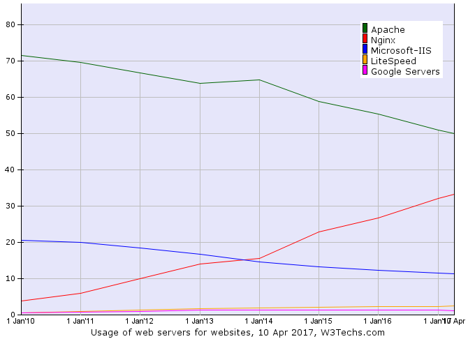
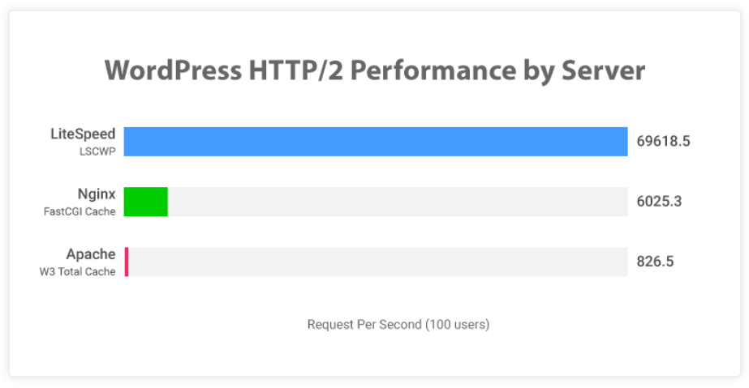

このページではApache（アパッチ）や、Nginx（エンジンエックス）、Litespeed（ライトスピード）など Webサーバーに搭載しているソフトウェアの種類について解説をしています。
Webサーバー本体の構築方法についての解説ではありませんのでご注意ください。
また、レンタルサーバー各社がどのWebサーバーソフトを導入しているのかについても、まとめています。 レンタルサーバー選びの参考にして下さい。
2023年時点のレンタルサーバーにおいて、Webサーバーに搭載されている主なソフトウェアは3種類あります。
まず、2010頃までは70％以上のシェアを持って業界のデファクトスタンダードだった「Apache（アパッチ）」が1つ目。
ここ10年でシェアを一気に伸ばしてきた「Nginx（エンジンエックス）」が2つ目。 また、同じくシェアが増えている「Litespeed」が３つ目になります。
ワードプレスに適しているのはLitespeed、次にNginxだと言われています。
ここ10年ではNginxのシェアが大きく増えていますが、直近1～2年ではLitespeedが最もシェアを増やしています。
「Cloudflare Server」も大きなシェアを持っていますが、当ページでは説明を割愛しています。
各ソフトウェアの世界シェアになります。次の図解は2017年時点のものになります。 Apacheがシェアを落とし、Nginxが増やしているのがわかります。
2010年～2017年のWEBサーバーシェア推移 w3techs 
実際にシェアのパーセンテージを表示させたものが次の数値になります。 Nginxが40％にまで迫っています。

Nginxが2年ほどで40％から32％までシェアを落としています。 変わってLiteSpeedが3％から6.5％まで増やしています。
「Cloudflare Server」が急にシェアに入ってきているのもわかります。

「Litespeed」と「Cloudflare Server」がそれぞれ1年間で5％ほど増えています。また、Nginxもシェアを微増させています。 結果、Apacheのシェアが31％近くまで落ち込みました。

Apacheはwebサーバーソフトの代名詞でもあり20年近く多くのサーバーに導入され運営されてきた実績があります。 2010年頃にはシェア70％近くありました。 近年になりシェアを落としてきていているものの、まだ大体40％ほどのシェアがあります。
つい最近まで7割以上のシェアを獲得していたということもあり、日本のレンタルサーバーのほとんどでも導入されていたのがアパッチです。 サーバー系の書籍をみても本屋に並んでいるのはアパッチのものがほとんどでしたし、webサーバーを構築する際のソフトとしても大体、どのホームページでもアパッチを導入することを前提として いたところが多かったです。
20年近くアパッチが全盛期だったわけですが、インターネットでホームページを見るための規格として「HTTP2」が採用されたこと。 多くのWebサイトがワードプレスで作られるようになり、それに適した「Nginx」がwebサーバーソフトとして選択されるようになりました。
エックスサーバーなど日本の多くのレンタルサーバー会社でも、この「Nginx」が採用されています。
「Nginx」は2010年にはわずか5％ほどのシェアでしたが、2017年には33％、そして2018年12月にはシェアが40％と なっています。その後2020年には32％まで落ちてきていますが、レンタルサーバーにおいて最も人気のWebサーバーソフトになります。
W3Cの統計データでは2020年に6.5％、2021年8月に11％までシェアを増やしてきています。
Wordpressに最適化した場合、Nginxよりも表示が速いとされていて、ここ1年～2年ほどでNginx以上にシェアを増やしています。 今後の増え方によってはNginxを超える可能性もあります。
当サイトで紹介しているレンタルサーバーでは「ロリポップ」「mixhost」「カラフルボックス」がLitespeedを導入しています。
 https://www.litespeedtech.com/benchmarks
| 会社 | ＷＥＢサーバー |
|---|---|
| mix host | LiteSpeed |
| カラフルボックス | LiteSpeed |
| ロリポップ | Litespeed（ハイスピードプラン）、Apache |
| エックスサーバー | Nginx |
| スターサーバー | Nginx |
| Conoha Wing | Nginx |
| さくらインターネット | Nginx、Apache |
| ヘテムル | Apache |
| お名前レンタルサーバー | Apache |
| iCLUSTA+ | Apache |
| ＣＰＩ | Apache |
プラン選びは料金だけでなく、CPUやメモリなどのスペック、そして管理画面のわかりやすさ、お問合せなどのサービス面。 様々な要素が関わってくるため迷ってしまうと思います。
他の要素もくわしく比較していますので、検討の判断材料にして下さい。
設定が不得意な方は：「ワードプレス簡単インストール」
安定性を求める方は：「稼働率」
| レンタルサーバーの比較 | ||||
|---|---|---|---|---|
| １．稼働率 | ２．ストレージ | ３．ＷＰ簡単インストール | ４．コールセンター対応 | ５．データベース数 |
| ６．容量 | ７．CPU＆メモリ | ８．webサーバー | ９．自動バックアップ | 10．転送量 |